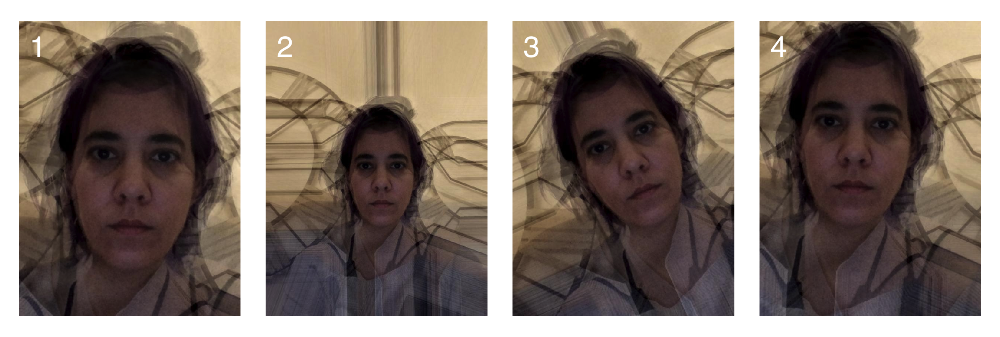
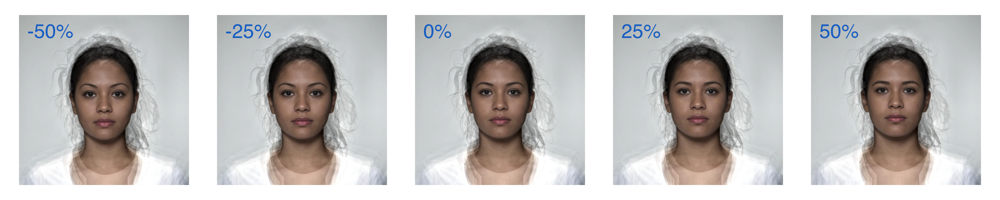
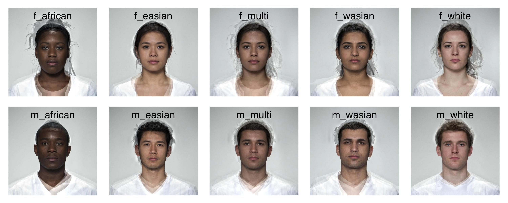
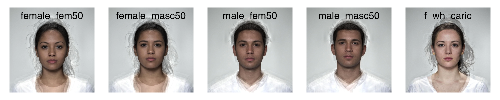

library(webmorphR)
#>
#> ************
#> Welcome to webmorphR. For support and examples visit:
#> https://facelab.github.io/webmorphR/
#> ************
#> Logged in as user 1
#> Your projects are using 25 Gb of 100 Gb
#> You have all permissions for project 1Log in
You need to have an authorised user account at webmorph.org to use the web integration functions. Log in before you use any of the functions.
login(email = "test@gmail.com", password = "my big secret")Ideally, you should put your login details in your .Renviron file and just use login() so you don’t accidentally share your password. The easiest way to find your .Renviron file is by typing usethis::edit_r_environ() in the console. Add the following lines to the file.
WEBMORPH_EMAIL="test@gmail.com"
WEBMORPH_PASSWORD="my big secret"Then webmorphR will automatically log you in when you load the library or use login().
login()
#> Logged in as user 1
#> Your projects are using 25 Gb of 100 Gb
#> You have all permissions for project 1WebmorphR is pretty verbose to let you know how the package is interacting with the website. You can turn off webmorphR messages globally with the options:
webmorph_options(verbose = FALSE)
webmorph_options(verbose = TRUE)Projects
Get your project list.
| id | name |
|---|---|
| 1 | Lisa DeBruine |
| 106 | Face Facts |
| 139 | 3dsk 50 Set |
| 140 | GMM Tests |
| 141 | Richie SOI GMM |
| 142 | Nikon |
Set your project by ID.
projSet(84877)
#> You have all permissions for project 84877Get the names of all files in a project (or a specified subdirectory) with the function dirLoad()
dirLoad()
#> [1] "/.trash/avg1_copy.jpg" "/.trash/avg1_copy.tem"
#> [3] "/.trash/avg1_copy1.jpg" "/.trash/avg1_copy1.tem"
#> [5] "/.trash/avg1_copy2.jpg" "/.trash/avg1_copy2.tem"
#> [7] "/.trash/avg1_copy3.jpg" "/.trash/avg1_copy3.tem"
#> [9] "/.trash/avg1_copy4.jpg" "/.trash/avg1_copy4.tem"
#> [11] "/.trash/avg1_copy5.jpg" "/.trash/avg1_copy5.tem"
#> [13] "/.trash/avg1.jpg" "/.trash/avg1.tem"
#> [15] "/.trash/lisa1.jpg" "/.trash/lisa1.tem"
#> [17] "/.trash/lisa2.jpg" "/.trash/lisa2.tem"
#> [19] "/composites/_citation.txt" "/composites/f_african.jpg"
#> [21] "/composites/f_african.tem" "/composites/f_easian.jpg"
#> [23] "/composites/f_easian.tem" "/composites/f_multi.jpg"
#> [25] "/composites/f_multi.tem" "/composites/f_wasian.jpg"
#> [27] "/composites/f_wasian.tem" "/composites/f_white.jpg"
#> [29] "/composites/f_white.tem" "/composites/m_african.jpg"
#> [31] "/composites/m_african.tem" "/composites/m_easian.jpg"
#> [33] "/composites/m_easian.tem" "/composites/m_multi.jpg"
#> [35] "/composites/m_multi.tem" "/composites/m_wasian.jpg"
#> [37] "/composites/m_wasian.tem" "/composites/m_white.jpg"
#> [39] "/composites/m_white.tem" "/lisa/lisa1.jpg"
#> [41] "/lisa/lisa1.tem" "/lisa/lisa2.jpg"
#> [43] "/lisa/lisa2.tem" "/lisa/lisa3.jpg"
#> [45] "/lisa/lisa3.tem" "/lisa/lisa4.jpg"
#> [47] "/lisa/lisa4.tem" "/templates/_batchAvg.txt"
#> [49] "/templates/_batchEdit.txt" "/templates/_batchTrans.txt"You can set or change your working project with projSet(). By default, this is set to your first project.
projSet(84877)
#> You have all permissions for project 84877Download Files
Download the files from the “composites” directory. By default, they are saved in a directory named as the project ID, and have the same directory substructure, but you can also download them to a single named directory.
dirLoad("composites") %>%
fileDownload(destination = "test")
#> Downloaded 21 filesNow you can read in the stimuli to webmorphR.

Create Averages
You can create averages with delineated images on the server. The example below shows how changing the order of the 4 files in the “lisa” directory changes the position of the average when using “twopoint” normalisation.
f1 <- sprintf("/lisa/lisa%d.jpg", c(1, 2, 3, 4))
avg1 <- makeAvg(f1, "test/avg1", norm = "twopoint")
f2 <- sprintf("/lisa/lisa%d.jpg", c(2, 1, 3, 4))
avg2 <- makeAvg(f2, "test/avg2", norm = "twopoint")
f3 <- sprintf("/lisa/lisa%d.jpg", c(3, 1, 2, 4))
avg3 <- makeAvg(f3, "test/avg3", norm = "twopoint")
f4 <- sprintf("/lisa/lisa%d.jpg", c(4, 1, 2, 3))
avg4 <- makeAvg(f4, "test/avg4", norm = "twopoint")Concatenate the resulting stimulus lists and plot them.
averages <- c(avg1, avg2, avg3, avg4)
plot_fig(averages, 8, 2.7, labels = 1:4, label.position = "top left",
label.size = 6, label.colour = "white")
Create Transforms
The function makeTrans() is structured like the batch transform files. The first 7 arguments are vectorised, so you can put in a vector of image names or shape/color/texture values.
For example, you can make a shape sexual dimorphism continuum by setting the shape argument as a vector.
steps <- seq(-0.5, 0.5, .25)
sexdim <- makeTrans(trans_img = "/composites/f_multi.jpg",
from_img = "/composites/f_multi.jpg",
to_img = "/composites/m_multi.jpg",
outname = "test/dim",
shape = steps,
color = 0,
texture = 0)
#> Starting 5 Transforms...
#> ... Transforms Completed
Or you can transform a set of images. Non-image files will be ignored, so you can get the contents of a directory on webmorph.org with dirLoad().
comp <- dirLoad("composites")
outname <- comp[grepl("jpg$", comp)] %>%
gsub("^/composites", "test/masc", .)
masc <- makeTrans(trans_img = comp,
from_img = "/composites/f_multi.jpg",
to_img = "/composites/m_multi.jpg",
outname = outname,
shape = 0.5,
color = 0,
texture = 0)
#> Starting 10 Transforms...
#> ... Transforms Completed
dirLoad("templates") %>%
fileDownload("test/templates")
#> Downloaded 3 files
# read one of the built-in batch templates
batch <- readr::read_tsv("test/templates/_batchTrans.txt",
col_types = readr::cols())
b <- batchTrans(batch)
#> Starting 5 Transforms...
#> ... Transforms Completed
Manage Files
You can upload these files to webmorph.org to use them in further morphs or transforms. Uploading files can take a long time, depending on server load, but you will see a progress bar in the console.
fileUpload() can take either a stimulus list or a vector of file paths, and optionally takes an upload directory (or is otherwise saved in the base directory of the active project).
tp <- fileUpload(averages, "/twopoint_avg/")
#> Starting Upload...
#> ... 8 of 8 uploadedYou can’t overwrite files on webmorph.org, so you might need to delete things sometimes.
You can delete individual files…
fileDelete(tp[1:2])
#> Starting Deletion...
#> ... 2 of 2 deleted
#> avg1.tem avg1.jpg
#> TRUE TRUE…but it’s usually more efficient and faster to delete an entire directory than individual files.
# clean up uploaded directories
dirDelete("/twopoint_avg/")
#> [1] TRUEThis script took 1.4 minutes to render all the included images from scratch.